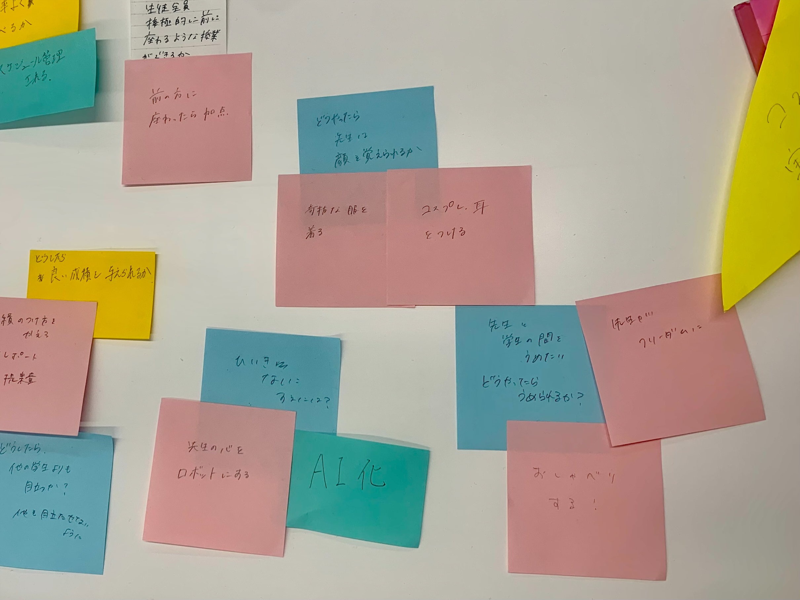
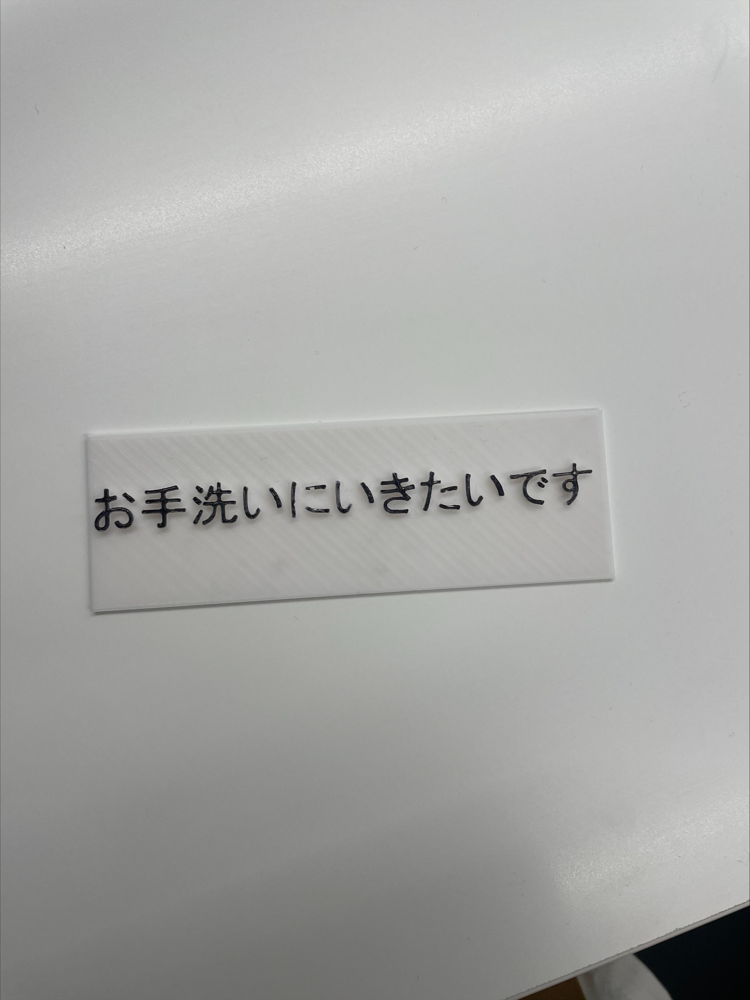
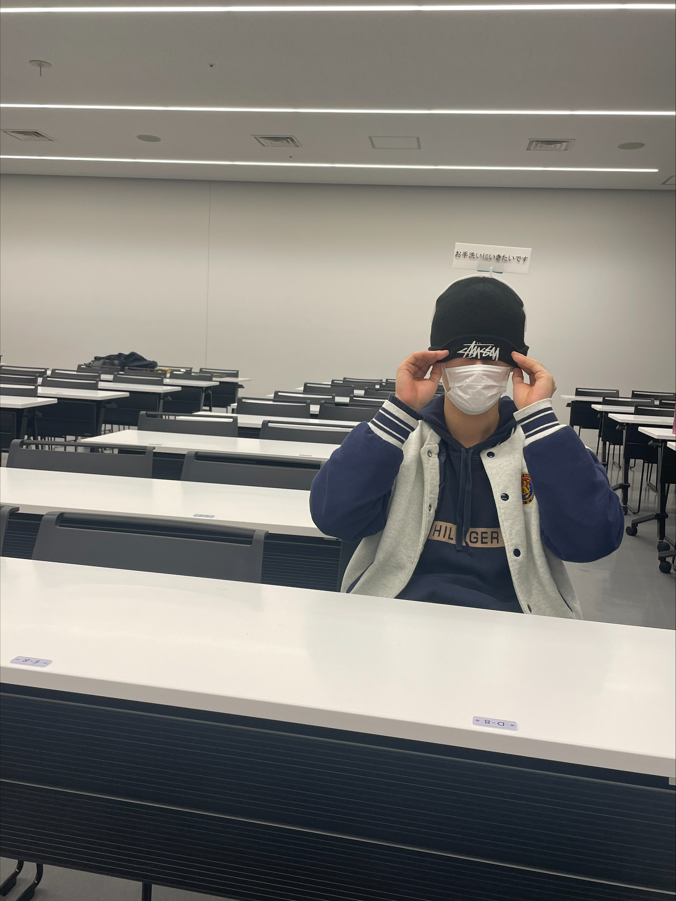
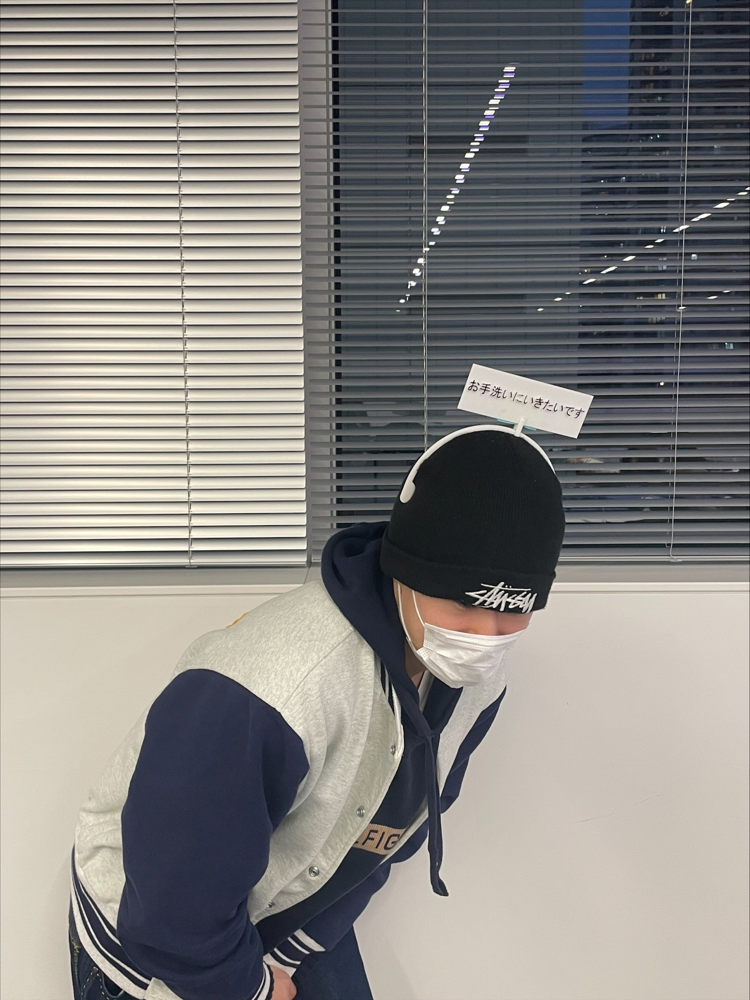

Design for Others
教員に伝えたいメッセージ
＜私たちの班の疑問＞
とある授業で、1人だけ広い教室の先頭で授業を受けている人がいた。
私たちは広い教室だと後ろの方に座ってしまいがちである。
なぜ先頭で授業を受けるのか班員で考えた。

目が悪い、真剣に授業を受けたいなどの意見が出たが、教授に顔を覚えられたいのが一番の理由だと考え、
私たちはカチューシャを作ることにした。
その中で私は、お手洗いに行きたいときに、手を挙げてお手洗いにいきたいですというのは恥ずかしいと考え、
言葉で言わなくても分かるようなカチューシャを作った。
＜作った作品の画像＞



使用素材
3Dプリンター
班のメンバーのリンク
イシズカアヤネ
莉子
こうげん
KAHO